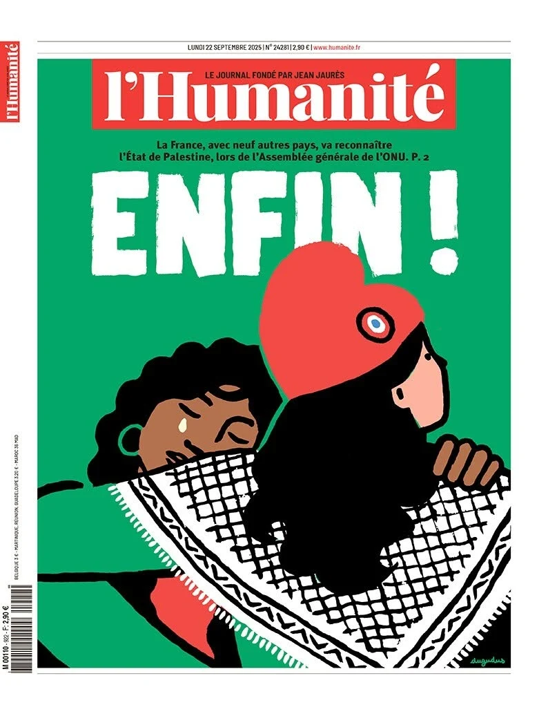

Revue de presse
« Enfin ! » La reconnaissance de l’État de Palestine à la une de L’Humanité
Date de mise à jour indiquée par Facebook · 21 septembre 2025
Repères éditoriaux
La une de L’Humanité datée du 22 septembre 2025 salue la reconnaissance de l’État de Palestine. Le partage de cette couverture et le compte rendu du rassemblement devant la mairie de Niort sont deux publications liées.
Texte de la publication · L’Humanité
L’Humanité du 22 septembre
Enfin !
📰 humanite.fr

Sources
L’Humanité · publication relayée par le PCF 79 · bibliothèque Facebook · AR-0002-FB-01006
À lire aussi · À Niort, des drapeaux palestiniens devant l’hôtel de ville le 22 septembre